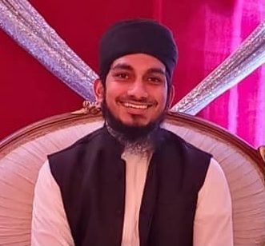

Meet our Imam, Mufti Saad Haque
A leader, a visionary, and a servant of the community, with rich education background, hopes to build a community based on Islamic principles, focused on youth, education and social welfare.
Mufti Saad Haque is the Director and the Head Imam of Zakaria Islamic Academy. Mufti Saad was raised in USA and educated in some of the well-established and well known Islamic Schools. He completed Hifz program in 2010, and Aalim course in 2016 from Darul Uloom New York (DUNY) in Jamaica, New York City. In 2018, he received his Iftaa Certification from Darul Iftaa Mahmudiyyah, under the world renowned, Mufti Ebrahim Desai, with specialization in Fiqh.
Mufti Saad has dedicated his life studying Islam, and has spent his childhood learning Quran. His unique background of being locally raised, and having rich and authentic Islamic education, makes him a good leader and great resource for Chantilly/Aldie Community. Beside speaking Eglish fluently, he can also communicate in several other traditional languages, which allows him to connect to diverse population in the local community.
Regularly, he leads daily prayers, performs Khutbah for Juma’ah, leads Eid prayers, offers Islamic counseling and guidance for individuals and families. Mufti Saad has a vision to increase education of Quran and Sunnah in the community, and guide the community to improve the Islamic awareness.
"Working strategically for the betterment of the community, today, and for the continuity of Islam, tomorrow"
Mufti Saad has been leading the Chantilly, South Riding, and Aldie community since 2018, and has initiated several social and educational programs. He has setup Food Drives, daily and weekly classes for Adults, Hifz program, periodic educational seminars such as "How to eat Halal" and "How to raise Muslim children".
In addition, Mufti Saad has participated in a regional collaboration of ulama at DMV Ulama Council, as a lead Imam on Media and Marketing Committee. He is also member of Counseling Committee, Iftaa & Research Committee, and Hilal Committee at DMV Ulama Council.
Our community is blessed to have an Imam with combination of local roots, deep Islamic Education, zeal of social work, and vision for the future. We pray to Allah to help our leaders, and bless their work, and reward their effort.
Education
- Iftaa (Specialized in Fiqh) from Darul Iftaa Mahmudiyyah, Durban, South Africa (2018)
- Aalim Degree from Draul Uloom, New York, USA (2016)
- Hifz Program from Draul Uloom, New York, USA (2010)
Affiliattions
- Imam & Director, Zakaria Islamic Academy (ZIA) (Since 2018)
- Lead, Media and Marketing Committee (DMV Ulama Council)
- Member, Counseling Committee (DMV Ulama Council)
- Member, Iftaa & Research Committee (DMV Ulama Council)
- Member, Hilal Committee (DMV Ulama Council)
- Instructor, DarusSalam Seminary (Chicago)